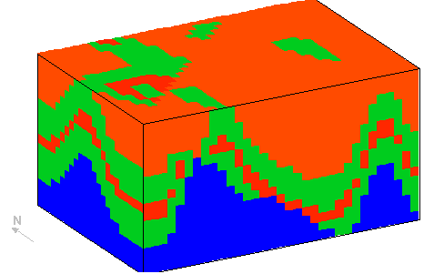
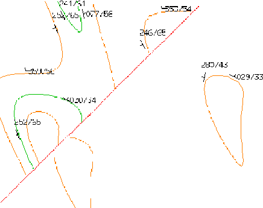
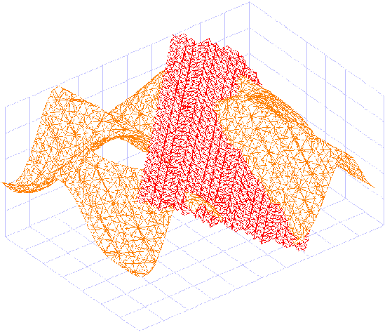

Tutorial 5: Importing and exporting data
Exercise 5: Importing and exporting data within Noddy
This exercise shows some of the current import/export capabilities for transferring geological information to and from Noddy.
a) First of all we will read in a simple history (q5.his) that shows a refolded-fold followed by a normal fault (ie
). First of all look at a block diagram of the geology:

•Now make a map of the top surface of the block by selecting Geology->Map->Lines, and click on the map to show the local orientation of bedding, this should help to explain the outcrop patterns.

b) Now select the Volume/Surface Options window, and turn off Surface Selection:All Surfaces, and select only the 2-Low and Fault Plane surfaces. Now exit from this window.
c) Select 3D Triangulation from the Geology menu and you should get a view of two intersecting triangulated surfaces:

•You can now go back to the Volume/Surface Options window and change the Surface Selection:Output Type to File (DXF 3D Faces), and select 3D Triangulation again from the Geology menu. This time the triangulation of the two surfaces will be saved out to file as in 3D DXF format (using 3D faces rather than polylines in this case to describe the triangular facets).
d) You can also export this geology as a voxel model in a number of different formats: as a Noddy Block Model format file; as a Raw Voxel model (tab delimited ASCII); or as a Tabulated Column format model which specifies the location of each voxel.
e) Only the Noddy format files can be directly read back in for further calculation of geophysical anomalies or deformation, although Vulcan "regularised block model" format models can be converted into Noddy format models via the Tools->Import Block->Vulcan menu option.
Noddy · open source under the MIT licence · Loop3D/noddy_qt